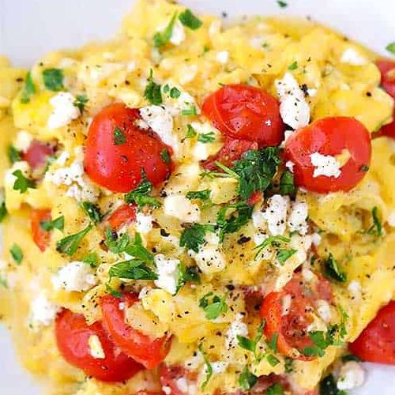

Description
Free Range scrambled eggs cooked with cheese and semi sundried tomoato.
*For best results serve on dense, seeded, dry toast and avocado.
Ingredients
- 4 Free Range Eggs
- 100g semi sun-dried tomatoes
- Two pieces of Bergen bread
- 1/2 an avocado
- 50g grated/shredded cheese
- As much sriracha mayo as you desire
- Salt & Pepper
- Olive Oil
Method
- Put bread into toaster and push down
- Crack 4 eggs into a bowl
- Add grated cheese to eggs and whisk until aerated
- Cut up semi sun-dried tomatoes into thrids (they should already come in segments)
- Take toast out and smear avocado on top
- Place semi sun-dried tomatoes near the stove for easy reach
- Switch on heat and add oil to pan
- Wait 60 seconds until pan is hot and oil is runny
- Add eggs to pan (continuously move eggs so they do not stick to the pan)
- As eggs begin to take shape and look nearly done, add semi sun-dried tomatoes
- Give the eggs 10 seconds, flip to seal for another 10 seconds
- Take eggs off heat and scrape onto toaster
- Add salt, pepper, and healthy dose of Sriracha Mayo
- Enjoy!
Return to Top